Kappale 2 2025
Lisää tulossa (samoin 2024 edeltävät vuodet)
2.1 Mihin kohtaan niveltä nivelreuma vaikuttaa
Ei vaihtoehtoja, mutta koita vastata ilman apuja.
Nivelkalvo eli synovia on nivelreumassa vaurioituva nivelen osa ja nivelturvotus onkin yksi ensimmäisiä löydöksiä. Vaikuttaa kylläkin luuhunkin, mutta ensimmäiseksi nivelkalvoon.
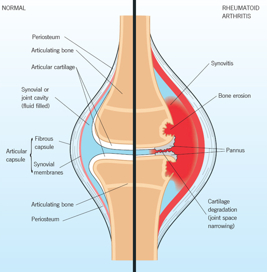
2.2 Mitä optimointi tarkoittaa säteilytutkimuksissa?
Ei vaihtoehtoja, koita vastata ilman apuja.
Optimointi = tutkimukseen käytettävä säteilyannos pidetään mahdollisimman pienenä (ALARA, as low as reasonably possible).
Radiologisten tutkimusten periaatteet = oikeutusperiaate (ionisoivan säteilyn käyttöön perustuvasta radiologisesta tutkimuksesta saatavan hyödyn tulee olla suurempi kuin haitta), optimointiperiaate (ALARA) ja yksilönsuojaperiaate (säteilyaltistusta aiheuttava toiminta on järjestettävä ja toteutettava niin että säteilylle altistuvan henkilön – tässä yhteydessä työntekijän – altistus ei ylitä annosrajoja).
2.3 Missä suurin säderasitus
- lantion rtg
- lantion tt
- lannerangan rtg
- sinus tt
b
TT:n säderasitus on huomattavasti suurempi kuin natiiviröntgenin. Sinus-TT:n (nenän sivuonteloiden tietokonetomografia) annos on pienempi kuin lantion alueen TT-kuvantaminen, koska alue on pieni ja siinä käytetään yleensä kartiokeila-TT-kuvantamista (KKTT)-> vielä normaaliakin matalampi annos.
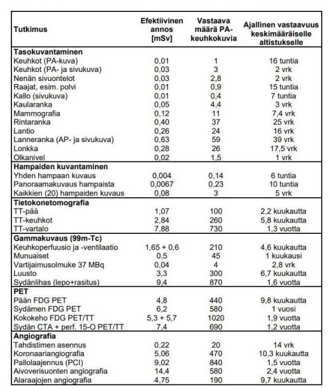
2.4 Mikä näkyy kirkkaana T2-kuvassa
- rasva
- neste
- luu
- ilma
b
Rasva kirkkaan harmaata (ei siis yhtä kirkas kuin neste), luu (kortikaalinen) tummaam, ilma tummaa, lihas tummaa
T1-kuvassa neste taas olisi tummaa.
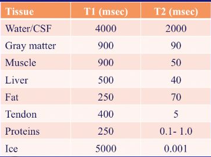
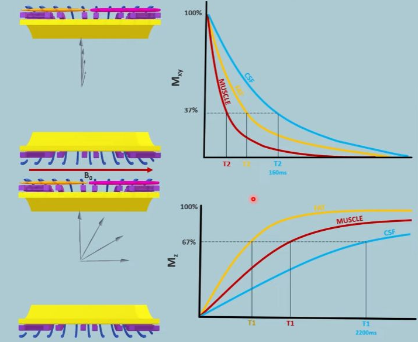
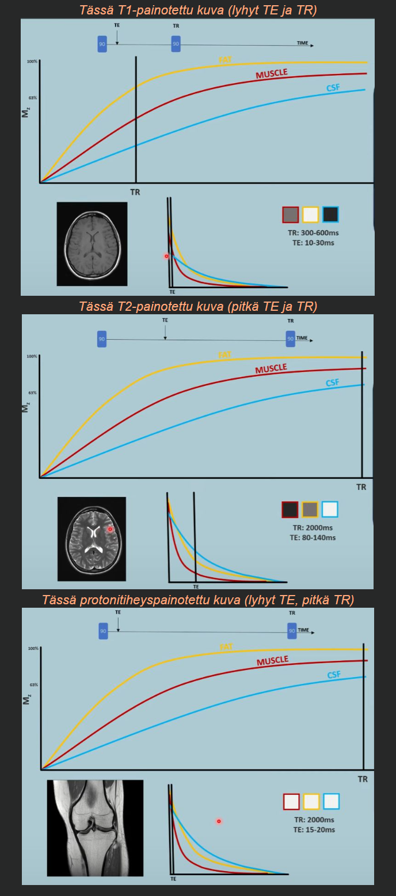
2.5 Olkapäässä luksaatiovamma 25v:lla n. 1v sitten, edelleen kipuilee, millä kuvataan
- UÄ
- MRI
- TT
- rtg
b
MRI, koska todnäk jokin pehmytkudosvaurio taustalla. Nuorella potilaalla olkapään sijoiltaanmenon jälkeinen pitkittynyt kipu viittaa mm. labrumin vaurioon (Bankart), kierinkalvosimen vammaan tai epästabiiliuteen. MRI kuvaa pehmytkudokset parhaiten. MR-artrografia (nivelensisäinen varjoaine) on vielä tarkempi nivelhuulen vaurioiden havaitsemisessa.
2.6 Mitä vatsan matala-annos TT:lla kuvataan
Ei vaihtoehtoja. Vähän kaikkea, pääasiassa varmaan haetaan vastauksena virtsatiekiviä, jos tarkoitetaan matala-annos-TT:tä ilman varjoainetta. Varjoaineen kanssa mm. aikuisten akuutissa vatsassa pääasiallinen kuvantamiskeino.
2.7 Nilkan luiden nimeäminen
Ei tarkemmin tärpissä. Tässä kuvat, joista voi harjoitella.
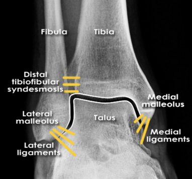
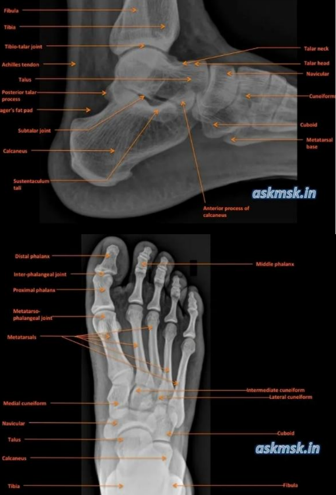
2.8 Polveen kiertovamma, vetolaatikko eteen ++, millä kuvataan ja miksi
Ei vaihtoehtoja, koita vastata ilman apuja.
RTG heti (aina herkästi vammoissa ja varsinkin veripolvitilanteissa -> voidaan arvioida kongurenssia ja murtumia) ja MRI (voidaan arvioida nivelsidevaurioita tarkasti; positiivinen vetilaatikko eteen viittaa erityisesti ACL-repeämään) seuraavaksi kiireellisesti (1-2vk).
Mikäli nivelet paikoillaan ja murtumia ei näy niin ei päivystyksellistä tarvetta jatkohoidolle tai kuvantamiselle.
Myös TT voisi auttaa ACL:n arvioimisessa, mutta ei tehdä tyypillisesti. Jos rtg-kuvassa niveleen ulottuva murtuma, tehdään TT.
2.9 Missä suurin efektiivinen annos
- thx-rtg
- molempien polvien rtg
- ei muistettu
THX-rtg:ssa aika samanlainen kuin polvien rtg:ssa. Jos otetaan molempien polvien, niin siinä on isompi rasitus kuin yhdessä AP-thx-kuvassa.
2.10 Tuumorin halkaisija aluksi 18mm, kontrolloituna 27mm, kuinka paljon massa on kasvanut?
- 50%
- 150%
- 250%
- 5-kertaistunut
c
2.11 Mihin alkuaineeseen MRI perustuu:
- jodi
- vety
- gadolinium
- happi
b
Tarkastellaan vety-ytimien eli protonien käyttäytymistä ulkoisessa magneettikentässä
MRI-kuvantamisessa tietyn vokselin nettomagnetoituma osoittaa aluksi ulkoisen magneettikentän suuntaan, mutta tätä muutetaan virittävän radiotaajuisen (radio frequency, RF) säteilypulssin avulla
Kun virittävä RF-pulssi päättyy, pyrkii systeemi palautumaan perustilaansa eli minimoimaan sisäisen energiansa. Ytimet alkavat siirtyä suuremmasta energiatilasta takaisin pienempään, ja systeemistä poistuva energia vapautuu sähkömagneettisena säteilynä, jonka taajuus on edelleen ytimien pyörimistaajuus. Tätä ilmiötä kutsutaan relaksaatioksi.
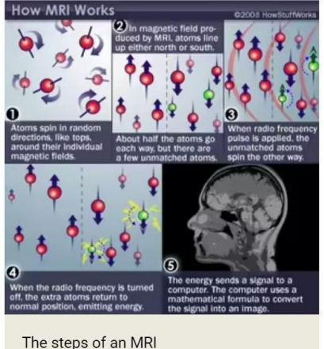
2.12 MRI edut Uä nähden
- ei ionisoivaa säteilyä
- parempi paikkatunnistuskyky
- pystyy tunnistamaan pienempiä rakenteita
bMRI 3D-kuvantamisena mahdollistaa sen, että itse rakenteen lokaatio on paremmin tunnistettavissa -> paikkatunnistuskyky parempi. Kuva ei myöskään ole tutkijariippuvainen, ja siinä kuvautuvat myös kaasun taakse jäävät rakenteet, joihin ultraääni ei yllä.
a: Molemmat ovat ionisoimattomia tutkimuksia
c: Ultraäänellä on parempi paikanerotuskyky (paikkaresoluutio) eli kykenee erottamaan kaksi vierekkäistä kohdetta pienemmällä etäisyydellä kuin MRI -> UÄ:llä pystytään tunnistamaan pienempiä rakenteita
2.13 HRTT:ssä hunajakennokuvioitus, mistä kertoo?
Ei vaihtoehtoja, koita vastata ilman apuja
Tyypillistä keuhkofibroosille (klassisesti idiopaattisen keuhkofibroosin myöhäinen muuto; ns. UIP-kuvio)
Hunajakennokuvio (honeycombing) tarkoittaa pieniä, paksuseinäisiä, ilmaa sisältäviä kystia, jotka sijaitsevat tyypillisesti keuhkojen reuna-alueilla ja alaosissa (subpleuraalisesti ja basaalisesti). Se kertoo keuhkorakenteen palautumattomasta tuhoutumisesta ja arpikudoksen muodostumisesta.
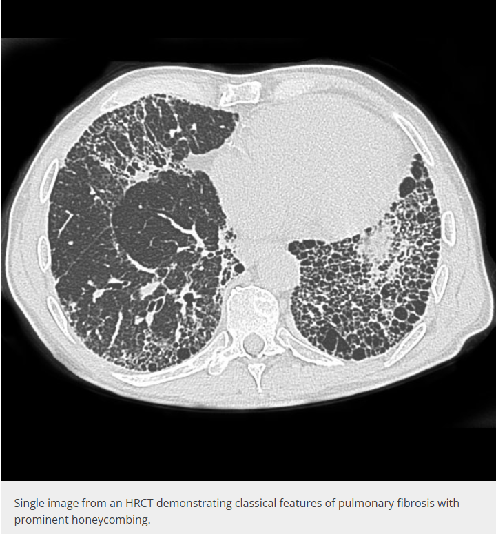
2.14 Mikä läpäisee parhaiten röntgensäteilyä?
- ilma
- rasva
- vesi
- luu
aTämän takia ilma on mustaa natiiviröntgenissä.
Vaimennus kasvaa tiheyden ja atomiluvun mukana: ilma < rasva < vesi/pehmytkudos < luu.
2.15 Vatsan TT ei saatavilla. Mitä vatsan röntgenkuvalla voidaan havaita?
- perforaatio
- okkluusio
- ei kumpikaan
- molemmat
dVatsan natiiviröntgeniä ei käytetä enää kovinkaan paljoa, mutta sillä voidaan periaatteessa havaita sekä:
Myös vierasesineet ovat hyvin näkyvissä ja natiivikuvantaminen onkin tyypillisin kuvantaminen, kun halutaan selvittää esim. lapsella nielaistun vierasesineen lokaatio (onko vielä ruokatorvessa/vatsalaukussa/onko jo suolessa)
2.16 Millä kuvantamismenetelmällä Alzheimerin taudin muutoksia hippokampuksessa voidaan havaita?
- TT ja MRI
- TT mutta ei MRI
- MRI mutta ei TT
- PET
aHippokampuksen surkastuminen (atrofia) ja ohimolohkon mediaalisten osien muutokset voidaan havaita sekä TT:llä että MRI:llä. TT:ssä käytetään ohuita koronaalisia rekonstruktioita. MRI on kuitenkin herkempi ja tarkempi, ja se on ensisijainen menetelmä hippokampuksen arvioinnissa, jos kuvataan elektiivisesti (usein vanhuksilla kuvataan TT akuutti-indikaatiossa esim. vamman yhteydessä ja siinä voidaan nähdä Alzheimerlöydöksiäkin samalla (pyydetään usein jälkilausunto)).
d: PET (FDG- tai amyloidi-PET) kuvaa aineenvaihduntaa ja amyloidikertymiä, ei ensisijaisesti hippokampuksen rakennetta.
2.17 Miten tuore veri näkyy pään TT:ssä?
- ei juuri näy
- vaaleana
- tummana
- samanvärisenä kuin muukin aivokudos
bTT-arvot laskevat n. 1,5HU päivässä ja vanha veri on jo tummaa (tällä välillä on jossain kohtaa samanvärinen kuin muukin aivokudos)
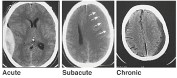
2.18 Mistä rasvapatjojen näkyminen kertoo?
- nestettä nivelraossa
- nestettä rasvapatjassa
- ei muistettu
aJos näkyy rasvapatjoja trauman yhteydessä -> ajattele intra-artikulaarista murtumaa (voi kuitenkin johtua muustakin nivelen hydropsia aiheuttavasta tilasta).
Rasvapatja on nivelkapselin ja luun välissä olevaa rasvakudosta, joka täyttää nivelen ympärillä olevia kuoppia; esim. kyynärnivelessä olekranon-, koronoidi- ja radiaalikuoppa. Röntgenkuvassa rasva näkyy tummempana kuin ympäröivä pehmytkudos.
Normaalisti esim. kyynärnivelen lateraali-rtg:ssä on anteriorinen ja posteriorinen rasvapatja. Anteriorinen voi olla nähtävissä, posteriorinen ei normaalisti koskaan.
Kun nivelessä on nestettä, kapseli pullistuu ja nostaa rasvapatjat näkyviin: etummainen patja nousee purjemaiseksi (sail sign) ja takimmainen tulee näkyviin. Takimmaisen rasvapatjan näkyminen on erityisen merkittävä löydös.
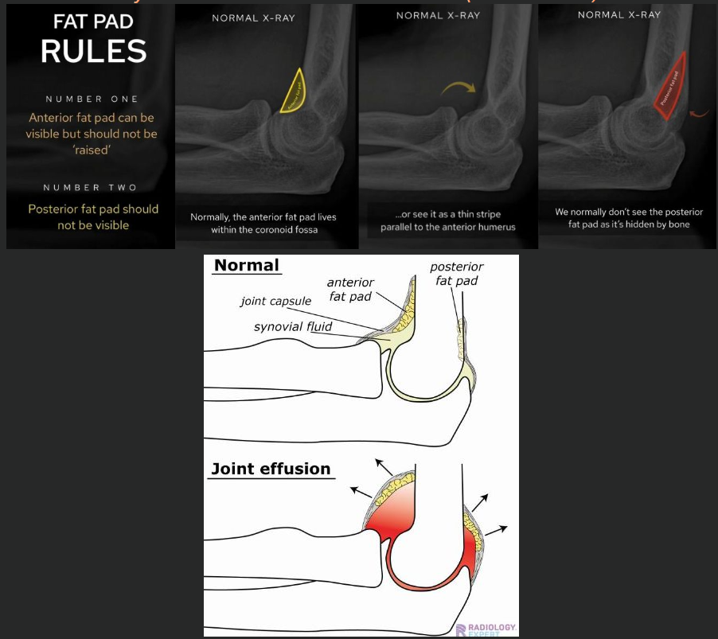
2.19 Kilpirauhasessa niukkakaikuinen leesio, mikä on paras tapa paikantaa punktion yhteydessä?
- uä
- palpointi
- tt
- mri
a2.20 Minkä läpi UÄ ei voi kuvantaa?
- kaasu
- rasva
- vesi
- joku
a2.21 Miten sappirakon kuvaus parhaiten onnistuu?
- paasto 1h ennen tmp
- runsaan veden juominen ennen tmp
- varjoaineella iv
- kaasua suolistossa
aSappirakon kuvantaminen tehdään ensisijaisesti UÄ:llä ja parhaiten se näkyy potilaan paastottua hetken (kaasua tai massaa ei ole niin paljoa suolessa häiritsemässä näkyvyyttä). Paastotessa myös sappirakko täyttyy sapella ja laajenee, jolloin sen seinämä, sisältö ja sappikivet erottuvat selvästi.
Usein suositellaan jopa hieman pidempää paastoa kuin 1h, mutta vaihtoehto a on silti paras näistä.
b: Veden juominen ja täysi virtsarakko ei auta sappirakon kuvantamista
c: Suonensisäinen varjoaine ei kuulu sappirakon UÄ-tutkimukseen
d: Suoliston kaasu heikentää ultraäänen kulkua ja huonontaa kuvanlaatua
2.22 40v potilas vuosi sitten kaatunut ranteen päälle, rtg:ssä ei murtumaa. Nyt kuormituksessa alkanut tuntua ikävää naksahtelua, miten kuvannat?
Ei vaihtoehtoja, koita vastata ilman apuja.
aVuoden takainen kaatuminen ja nyt kuormituksessa ilmenevä naksahtelu viittaavat ranteen sidekudosvaurioon, jota natiiviröntgen ei näytä. Tällaisessa tilanteessa MRI on paras, koska se kuvaa pehmytkudokset, siteet ja rustot parhaiten.
2.23 Potilaalla viikon ripulia, kuvannatko ja jos niin miten?
Ei vaihtoehtoja, koita vastata ilman apuja.
Ei, jos vain tyypillistä ripulia. Viikon kestänyt ripuli on useimmiten infektio (virus tai bakteeri), jonka diagnoosi perustuu esitietoihin, kliiniseen tutkimukseen ja tarvittaessa ulostenäytteisiin (bakteeriviljely, Clostridioides difficile-toksiinit, mahdollisesti loiset). Kuvantaminen ei muuta hoitoa.
Ripulissa kolonoskopia on muutenkin ensisijainen kuvantamismenetelmä, mutta yleensä indikoitu vasta, kun pitkittynyt ripuli (kesto>4vk).
Akuutimmassa tilanteessa, jos on hälytysoireita akuutista vatsasta/epäilyä komplikaatioista, niin silloin vatsan varjoaine-TT olisi yleensä ensisijainen.